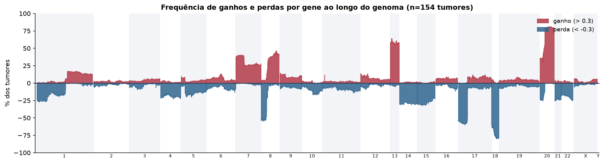
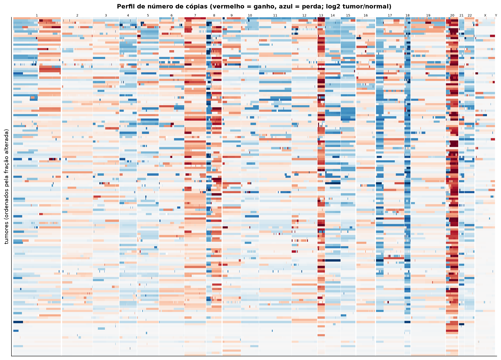
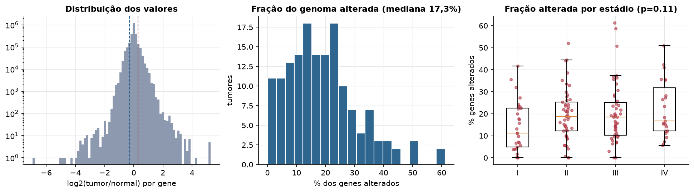
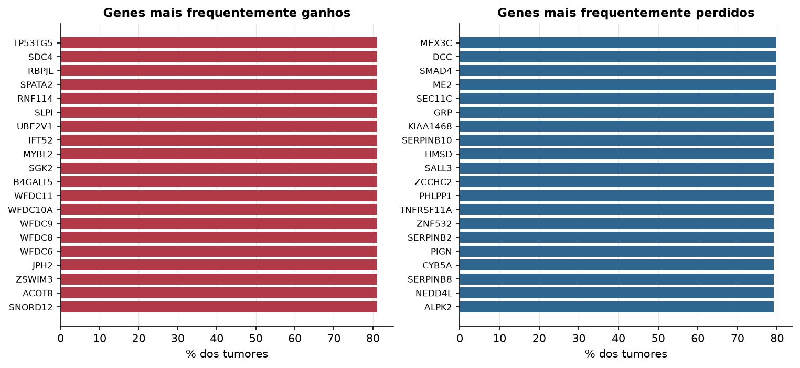

READ · Número de cópias (CNV)
Affymetrix SNP6, segmentos whitelisted do PanCanAtlas · gerado em 22/10/2026 03:31
154tumores
17.738genes
17,3%fração alterada mediana
142segmentos/tumor (mediana)
Fonte: SNP6 whitelisted (PanCanAtlas); nível de gene calculado dos segmentos (hg19)
O valor por gene é o do segmento que cobre o meio do gene (log2 tumor/normal, hg19). Sem correção de pureza e ploidia: tumores com pouca célula tumoral têm valores atenuados. Para chamadas discretas (−2 a 2), use o GISTIC2 do PanCanAtlas ou o ABSOLUTE.
Principais resultados
- Mediana de 17,3% dos genes com ganho ou perda por tumor (limiares log2 de 0.3 e -0.3).
- O cromossomo com mais ganhos em média é o 20 (61,8% dos tumores por gene) e o com mais perdas é o 18 (69,6%).
- Genes mais ganhos: TP53TG5 (81%), SDC4 (81%), RBPJL (81%), SPATA2 (81%), RNF114 (81%), SLPI (81%). Genes mais perdidos: MEX3C (80%), DCC (80%), SMAD4 (80%), ME2 (80%), SEC11C (79%), GRP (79%).
- Fração alterada por estádio: Kruskal-Wallis p=0.11.
Paisagem ao longo do genoma


Carga de alterações

Genes recorrentes

Top 25 genes por frequência de ganho
| gene | chrom | % ganho | % perda | média log2 |
|---|---|---|---|---|
| TP53TG5 | 20 | 81.2 | 0 | 0.625 |
| SDC4 | 20 | 81.2 | 0 | 0.625 |
| RBPJL | 20 | 81.2 | 0 | 0.625 |
| SPATA2 | 20 | 81.2 | 0 | 0.617 |
| RNF114 | 20 | 81.2 | 0 | 0.617 |
| SLPI | 20 | 81.2 | 0 | 0.627 |
| UBE2V1 | 20 | 81.2 | 0 | 0.617 |
| IFT52 | 20 | 81.2 | 0 | 0.62 |
| MYBL2 | 20 | 81.2 | 0 | 0.623 |
| SGK2 | 20 | 81.2 | 0 | 0.62 |
| B4GALT5 | 20 | 81.2 | 0 | 0.617 |
| WFDC11 | 20 | 81.2 | 0 | 0.622 |
| WFDC10A | 20 | 81.2 | 0 | 0.625 |
| WFDC9 | 20 | 81.2 | 0 | 0.625 |
| WFDC8 | 20 | 81.2 | 0 | 0.625 |
| WFDC6 | 20 | 81.2 | 0 | 0.625 |
| JPH2 | 20 | 81.2 | 0 | 0.623 |
| ZSWIM3 | 20 | 81.2 | 0 | 0.622 |
| ACOT8 | 20 | 81.2 | 0 | 0.619 |
| SNORD12 | 20 | 81.2 | 0 | 0.619 |
| SNORD12B | 20 | 81.2 | 0 | 0.619 |
| SNORD12C | 20 | 81.2 | 0 | 0.619 |
| SYS1 | 20 | 81.2 | 0 | 0.625 |
| SYS1-DBNDD2 | 20 | 81.2 | 0 | 0.625 |
| DBNDD2 | 20 | 81.2 | 0 | 0.625 |
Top 25 genes por frequência de perda
| gene | chrom | % ganho | % perda | média log2 |
|---|---|---|---|---|
| MEX3C | 18 | 0 | 79.9 | -0.541 |
| DCC | 18 | 0 | 79.9 | -0.52 |
| SMAD4 | 18 | 0 | 79.9 | -0.542 |
| ME2 | 18 | 0 | 79.9 | -0.541 |
| SEC11C | 18 | 0 | 79.2 | -0.505 |
| GRP | 18 | 0 | 79.2 | -0.505 |
| KIAA1468 | 18 | 0 | 79.2 | -0.506 |
| SERPINB10 | 18 | 0 | 79.2 | -0.517 |
| HMSD | 18 | 0 | 79.2 | -0.517 |
| SALL3 | 18 | 0.6 | 79.2 | -0.509 |
| ZCCHC2 | 18 | 0 | 79.2 | -0.506 |
| PHLPP1 | 18 | 0.6 | 79.2 | -0.502 |
| TNFRSF11A | 18 | 0 | 79.2 | -0.506 |
| ZNF532 | 18 | 0 | 79.2 | -0.505 |
| SERPINB2 | 18 | 0 | 79.2 | -0.517 |
| PIGN | 18 | 0 | 79.2 | -0.506 |
| CYB5A | 18 | 0 | 79.2 | -0.499 |
| SERPINB8 | 18 | 0 | 79.2 | -0.517 |
| NEDD4L | 18 | 0 | 79.2 | -0.505 |
| ALPK2 | 18 | 0 | 79.2 | -0.505 |
| RAX | 18 | 0 | 79.2 | -0.505 |
| MC4R | 18 | 0 | 79.2 | -0.505 |
| CPLX4 | 18 | 0 | 79.2 | -0.505 |
| PMAIP1 | 18 | 0 | 79.2 | -0.505 |
| CCBE1 | 18 | 0 | 79.2 | -0.504 |